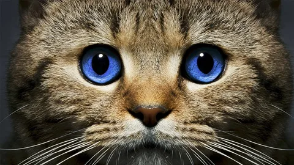

Котики — наши пушистые друзья
Котики — это одни из самых популярных домашних животных в мире. Они обладают невероятной грацией, мягкой шерстью и загадочным характером. Котики могут быть как ласковыми, так и независимыми, что делает их такими интересными для людей.
История дружбы человека и кошки насчитывает тысячи лет. Древние египтяне считали кошек священными животными, а в современном мире они стали настоящими членами семьи. Котики не только радуют нас своим присутствием, но и помогают снимать стресс и улучшают настроение.
Если вы хотите узнать больше о котиках, посетите страницу о кошках в Википедии.